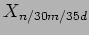

Next: Introduction
Up: Adaptive Optimal Telescope Scheduling
Previous: List of Figures
Contents
- Definitions of alert and clear threshold levels for triggering good/bad weather conditions. A variable crossing its alert level signals bad weather. In order to clear (signal good weather) the variable must pass the primary clear level and remain below secondary level for at least the time specified by stability parameter. All variables must be in the clear state for overall Good weather. Any variable in its alert state indicates bad weather.
- Fraction of recorded weather variable statistics over alert level.
- Quartiles of raw and corrected seeing distributions
- Set of standard execution models. Classified as slow (s), normal (n) and fast (f), with maximum execution times short (S) and long (L). Hi models have extra high horizon. Additional models defined based on these but with e.g. MaxT 30 minutes and horizon elevation 35 would be specified as
.
- Case study night characteristics
- Results for Night 1 under

- Results for Night 1 under

- Results for Night 2 under
- Results for Night 2 under
- Details of seeing component of environmental scenario generator model.
- Phase2 model descriptions - need more info on these than what is in table esp the gen models
Steve Fraser
2008-01-31